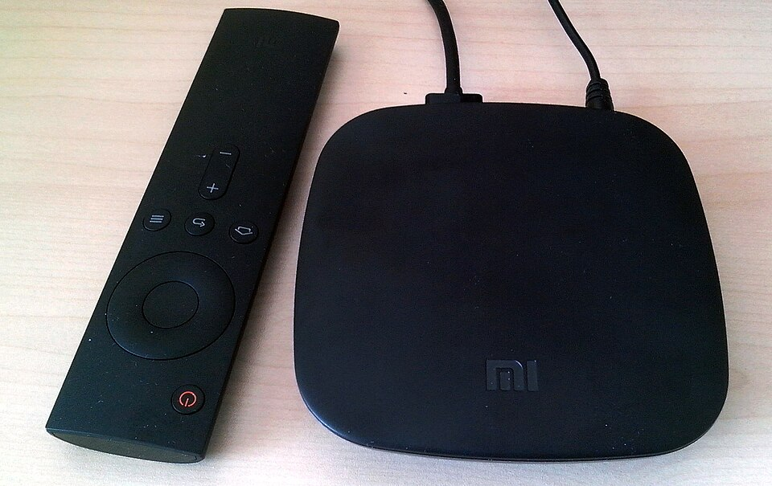

Αν έχεις πληκτρολογήσει iptv m3u github στη μηχανή αναζήτησης, πιθανότατα ψάχνεις έναν γρήγορο τρόπο να βρεις έτοιμες λίστες καναλιών που θα φορτώσεις σε μια εφαρμογή αναπαραγωγής. Το GitHub φιλοξενεί χιλιάδες αποθετήρια με αρχεία .m3u και .m3u8, και είναι λογικό να φαίνεται σαν ένα ανεξάντλητο «ράφι» με δωρεάν περιεχόμενο. Στην πράξη όμως, η εμπειρία είναι συχνά απογοητευτική: νεκροί σύνδεσμοι, κανάλια που κολλάνε κάθε λίγα λεπτά, λίστες που δεν ενημερώνονται ποτέ και, σε χειρότερες περιπτώσεις, αρχεία που παραπέμπουν σε αμφίβολης προέλευσης πηγές.
Σε αυτόν τον οδηγό θα δούμε αναλυτικά τι είναι ένα αρχείο M3U, γιατί τόσοι χρήστες ψάχνουν στο GitHub, πώς δουλεύει στην πραγματικότητα μια τέτοια λίστα, ποιοι είναι οι τεχνικοί και νομικοί κίνδυνοι και, κυρίως, ποια είναι η πιο σταθερή λύση για όσους θέλουν ελληνική τηλεόραση χωρίς εκπλήξεις. Θα δεις επίσης βήμα-βήμα πώς φορτώνεται μια playlist σε διάφορες συσκευές και πώς ελέγχεις αν ένας σύνδεσμος αξίζει τον κόπο. Αν θέλεις να πας κατευθείαν σε μια αξιόπιστη λύση, μπορείς να δεις την υπηρεσία greek iptv, που προσφέρει πάνω από 30.000 κανάλια με σταθερή ροή και υποστήριξη στα ελληνικά.
Ο στόχος μας δεν είναι να σε αποθαρρύνουμε από το να πειραματιστείς, αλλά να σου δώσουμε ολοκληρωμένη εικόνα, ώστε να αποφασίσεις με ενημέρωση. Ας ξεκινήσουμε από τα βασικά.
Περιεχόμενα
- Τι είναι ένα αρχείο M3U και τι σχέση έχει με το GitHub
- Γιατί οι χρήστες ψάχνουν IPTV M3U στο GitHub
- Πώς λειτουργεί μια playlist M3U στην πράξη
- Κίνδυνοι και περιορισμοί των δωρεάν λιστών
- Πώς φορτώνεις μια M3U playlist σε κάθε συσκευή
- Πώς ελέγχεις αν μια λίστα αξίζει τον κόπο
- Η σταθερή εναλλακτική: συνδρομή Greek IPTV
- Σύγκριση: GitHub playlists vs επαγγελματική υπηρεσία
- Συχνές ερωτήσεις
Τι είναι ένα αρχείο M3U και τι σχέση έχει με το GitHub
Το M3U είναι ένα απλό αρχείο κειμένου που λειτουργεί σαν «κατάλογος». Μέσα του υπάρχει μια λίστα με διευθύνσεις (URLs) καναλιών ή αρχείων πολυμέσων, μαζί με πληροφορίες όπως το όνομα του καναλιού, το λογότυπο και την ομάδα στην οποία ανήκει. Η μορφή M3U8 είναι η ίδια ιδέα με κωδικοποίηση UTF-8, ώστε να υποστηρίζονται σωστά οι ελληνικοί χαρακτήρες.
Το GitHub, από την άλλη, είναι πλατφόρμα φιλοξενίας κώδικα. Επειδή ένα αρχείο M3U είναι απλό κείμενο, πολλοί χρήστες το ανεβάζουν εκεί για να το μοιραστούν ή να το συντηρούν μαζί με άλλους. Το GitHub δεν είναι υπηρεσία IPTV και δεν εγγυάται τίποτα για το περιεχόμενο των αρχείων που φιλοξενεί.
Η δομή ενός τυπικού αρχείου
Κάθε αρχείο ξεκινά με τη γραμμή #EXTM3U. Στη συνέχεια, κάθε κανάλι περιγράφεται με δύο γραμμές: μία που αρχίζει με #EXTINF και περιέχει τα μεταδεδομένα και μία με τη διεύθυνση της ροής. Αυτή η απλότητα εξηγεί γιατί οι λίστες μπορούν να φορτωθούν σχεδόν σε οποιαδήποτε εφαρμογή.
Raw σύνδεσμος έναντι σελίδας αποθετηρίου
Ένα συνηθισμένο λάθος είναι η αντιγραφή του συνδέσμου της σελίδας του αποθετηρίου αντί για τον «raw» σύνδεσμο. Η εφαρμογή αναπαραγωγής χρειάζεται την άμεση διεύθυνση του αρχείου κειμένου (raw.githubusercontent.com). Αν δώσεις τη σελίδα HTML του GitHub, η λίστα δεν θα διαβαστεί και θα δεις μήνυμα σφάλματος.
Γιατί οι χρήστες ψάχνουν IPTV M3U στο GitHub
Οι λόγοι είναι σχεδόν πάντα οι ίδιοι: η περιέργεια, το κόστος και η ανάγκη για ευελιξία. Πολλοί θέλουν να δοκιμάσουν μια εφαρμογή αναπαραγωγής και χρειάζονται κάποιο περιεχόμενο για να δουν αν δουλεύει. Άλλοι ψάχνουν λίστες για συγκεκριμένες χώρες ή γλώσσες, όπως τα ελληνικά κανάλια.
Δωρεάν πρόσβαση και δοκιμές
Η δωρεάν φύση του GitHub κάνει τον χρήστη να πιστεύει ότι θα βρει «ό,τι θέλει» χωρίς κόστος. Αν σε ενδιαφέρει το θέμα γενικότερα, διάβασε και το άρθρο μας για την λίστα IPTV και πώς επιλέγεις την κατάλληλη, όπου εξηγούμε τι πρέπει να προσέχεις πριν εμπιστευτείς μια πηγή.
Συλλογές κοινότητας και ανοιχτός κώδικας
Υπάρχουν γνωστά αποθετήρια που συγκεντρώνουν δημόσια διαθέσιμες ροές από όλο τον κόσμο, κυρίως ελεύθερα εκπεμπόμενα κανάλια που ο ίδιος ο σταθμός διαθέτει στο διαδίκτυο. Αυτά είναι νόμιμα, αλλά περιορισμένα: λίγα κανάλια, χαμηλή ποιότητα και συχνές διακοπές.
Πώς λειτουργεί μια playlist M3U στην πράξη
Η playlist δεν περιέχει βίντεο. Περιέχει μόνο οδηγίες για το πού βρίσκεται η ροή. Όταν επιλέγεις ένα κανάλι, η εφαρμογή σου κάνει αίτημα στον διακομιστή που αναγράφεται στη γραμμή του καναλιού και ξεκινά η αναπαραγωγή. Αν ο διακομιστής έχει σβηστεί, αλλάξει διεύθυνση ή απαιτεί σύνδεση, το κανάλι απλά δεν παίζει.
Γιατί οι δωρεάν λίστες «πεθαίνουν» τόσο γρήγορα
Η ροή ενός καναλιού εξαρτάται από τον πάροχο που τη διαθέτει. Όταν ο πάροχος αλλάζει διευθύνσεις ή μπλοκάρει την πρόσβαση, ο σύνδεσμος στη λίστα σταματά να λειτουργεί. Επειδή οι περισσότερες λίστες στο GitHub συντηρούνται από εθελοντές, ο έλεγχος και η αντικατάσταση συνδέσμων γίνεται σπάνια. Έτσι, μια λίστα που δούλευε τον περασμένο μήνα μπορεί σήμερα να έχει πάνω από τους μισούς συνδέσμους νεκρούς.
Ο ρόλος του EPG
Ο ηλεκτρονικός οδηγός προγράμματος (EPG) είναι ξεχωριστό αρχείο που αντιστοιχίζει τα κανάλια με τις εκπομπές. Στις δωρεάν λίστες συνήθως λείπει ή δεν ταιριάζει σωστά, με αποτέλεσμα να βλέπεις κενό πρόγραμμα. Στις επαγγελματικές υπηρεσίες, το EPG είναι ενσωματωμένο και ενημερώνεται αυτόματα.
Κίνδυνοι και περιορισμοί των δωρεάν λιστών
Πριν φορτώσεις οποιαδήποτε λίστα από άγνωστη πηγή, καλό είναι να γνωρίζεις τι ρισκάρεις. Δεν πρόκειται για τρομολαγνεία, αλλά για πρακτικά ζητήματα που αντιμετωπίζουν καθημερινά οι χρήστες.
Τεχνικά προβλήματα
- Νεκροί σύνδεσμοι: μεγάλο ποσοστό των καναλιών δεν παίζει καθόλου.
- Buffering: οι ροές δεν είναι σχεδιασμένες για πολλούς θεατές ταυτόχρονα και κολλάνε στις ώρες αιχμής.
- Χαμηλή ποιότητα: πολλές ροές είναι σε SD ή με μεταβλητή ανάλυση.
- Λάθος ονόματα και ομαδοποίηση: κανάλια με λανθασμένες ετικέτες ή διπλότυπα.
Νομικά και ασφάλεια
Αρκετές λίστες περιέχουν συνδέσμους προς περιεχόμενο που δεν έχει άδεια διανομής. Η χρήση τέτοιων πηγών μπορεί να έχει νομικές συνέπειες ανάλογα με τη χώρα σου. Επιπλέον, ένα αρχείο M3U μπορεί να παραπέμπει σε εξωτερικούς διακομιστές που καταγράφουν τη διεύθυνση IP σου ή να σε οδηγούν σε σελίδες με διαφημίσεις και ανεπιθύμητο λογισμικό. Μην κατεβάζεις ποτέ εκτελέσιμα αρχεία ή «ειδικούς players» που προτείνονται μέσα σε αποθετήρια με αμφίβολη φήμη.
Για περισσότερες πληροφορίες σχετικά με το πώς ξεχωρίζεις τα νόμιμα μοντέλα, δες και το άρθρο μας για τους δωρεάν IPTV M3U συνδέσμους, όπου αναλύουμε τι σημαίνει πραγματικά «δωρεάν» σε αυτόν τον χώρο.

Πώς φορτώνεις μια M3U playlist σε κάθε συσκευή
Ανεξάρτητα από την προέλευση της λίστας, η διαδικασία φόρτωσης είναι παρόμοια. Χρειάζεσαι μια εφαρμογή αναπαραγωγής και είτε τον σύνδεσμο της λίστας είτε το ίδιο το αρχείο.
Android, Android TV και TV box
Εγκατέστησε μια εφαρμογή αναπαραγωγής από το Google Play, επίλεξε «Προσθήκη playlist» ή «Load M3U URL» και επικόλλησε τον raw σύνδεσμο. Η εφαρμογή θα κατεβάσει τη λίστα και θα εμφανίσει τα κανάλια σε κατηγορίες. Στις συσκευές TV box είναι συνήθως ευκολότερο να εισαγάγεις τον σύνδεσμο από το κινητό και να τον συγχρονίσεις.
Windows, Mac και Linux
Σε υπολογιστή, εφαρμογές όπως το VLC ανοίγουν απευθείας ένα αρχείο M3U μέσω του μενού «Άνοιγμα δικτύου». Αν χρησιμοποιείς Linux, δες και τον οδηγό μας για το IPTV σε Linux, όπου περιγράφουμε τις καλύτερες εφαρμογές και ρυθμίσεις για αυτό το λειτουργικό.
Smart TV και Apple TV
Σε Smart TV χρειάζεται να εγκαταστήσεις εφαρμογή IPTV από το κατάστημα της τηλεόρασης. Επειδή η εισαγωγή μακριών συνδέσμων με το τηλεχειριστήριο είναι κουραστική, πολλές εφαρμογές προσφέρουν φόρτωση μέσω κωδικού ή διαδικτυακής σελίδας ρυθμίσεων.
Πώς ελέγχεις αν μια λίστα αξίζει τον κόπο
Αν παρ’ όλα αυτά θέλεις να δοκιμάσεις μια δημόσια λίστα, ακολούθησε μια απλή λίστα ελέγχου πριν τη φορτώσεις μόνιμα στη συσκευή σου.
Έλεγχος του αποθετηρίου
- Δες πότε έγινε η τελευταία ενημέρωση (commit). Αν είναι πάνω από λίγους μήνες πριν, η λίστα είναι πιθανότατα νεκρή.
- Διάβασε το README και τα issues: οι χρήστες συνήθως αναφέρουν εκεί ποια κανάλια δεν δουλεύουν.
- Έλεγξε τον αριθμό των αστεριών και των συνεισφερόντων ως ένδειξη αξιοπιστίας.
Έλεγχος του ίδιου του αρχείου
Άνοιξε το αρχείο σε έναν απλό επεξεργαστή κειμένου και δες αν περιέχει μόνο γραμμές #EXTINF και διευθύνσεις ροής. Αν βρεις περίεργους συνδέσμους προς εκτελέσιμα αρχεία ή σελίδες εγγραφής, απόφυγέ το. Μπορείς επίσης να χρησιμοποιήσεις εργαλεία ελέγχου συνδέσμων ώστε να δεις πόσα κανάλια ανταποκρίνονται πραγματικά.
Η σταθερή εναλλακτική: συνδρομή Greek IPTV
Αν θέλεις να βλέπεις ελληνική τηλεόραση χωρίς να ψάχνεις κάθε εβδομάδα για νέα λίστα, η συνδρομητική υπηρεσία είναι η πιο πρακτική λύση. Το Greek IPTV δίνει πρόσβαση σε πάνω από 30.000 κανάλια και 150.000 ταινίες και σειρές, με ελληνικά κανάλια, αθλητικά, ειδήσεις και παιδικά σε υψηλή ποιότητα HD και 4K.
Τι κερδίζεις έναντι μιας δωρεάν λίστας
- Σταθερότητα: ισχυρή υποδομή διακομιστών και λιγότερο buffering ακόμη και σε αγώνες και μεγάλες εκπομπές.
- Ενσωματωμένο EPG: πλήρης οδηγός προγράμματος που ενημερώνεται αυτόματα.
- Υποστήριξη: επικοινωνία με ομάδα που μιλά ελληνικά και βοηθά με την εγκατάσταση.
- Συμβατότητα: δουλεύει με M3U, Xtream Codes και δημοφιλείς εφαρμογές σε όλες τις συσκευές.
Άμεση ενεργοποίηση και ευελιξία
Η ενεργοποίηση γίνεται μέσα σε λίγα λεπτά και δεν υπάρχει μακροχρόνιο συμβόλαιο. Μπορείς να δεις τα διαθέσιμα πακέτα στη σελίδα greekiptv.tv και να επιλέξεις αυτό που ταιριάζει στις ανάγκες και στον προϋπολογισμό σου. Αν σε ενδιαφέρει και η διεθνής αγορά, μπορείς να δεις πώς δουλεύουν παρόμοιες υπηρεσίες σε άλλες χώρες, όπως το tilaa iptv και το romania iptv.
Σύγκριση: GitHub playlists vs επαγγελματική υπηρεσία
Ο παρακάτω πίνακας συνοψίζει τις βασικές διαφορές ώστε να έχεις γρήγορη εικόνα.
| Κριτήριο | Δωρεάν λίστα GitHub | Greek IPTV |
|---|---|---|
| Αριθμός καναλιών | Λίγες δεκάδες έως εκατοντάδες | +30.000 κανάλια |
| Σταθερότητα ροής | Χαμηλή, συχνές διακοπές | Υψηλή, σταθεροί διακομιστές |
| Ποιότητα εικόνας | Κυρίως SD ή μεταβλητή | HD / Full HD / 4K |
| Οδηγός προγράμματος (EPG) | Συχνά απουσιάζει | Ενσωματωμένος |
| Υποστήριξη | Καμία | Ελληνική υποστήριξη |
| Ασφάλεια και διαφάνεια | Άγνωστη πηγή | Γνωστός πάροχος |
Για να έχεις πιο ολοκληρωμένη εικόνα για τα διαθέσιμα κανάλια, δες και τον οδηγό για τα ελληνικά κανάλια IPTV.
Συμβουλές για σωστή χρήση οποιασδήποτε playlist
Όποια πηγή κι αν επιλέξεις, υπάρχουν κάποιες καλές πρακτικές που βελτιώνουν την εμπειρία σου.
Ταχύτητα σύνδεσης και δίκτυο
Για ροή HD χρειάζεσαι τουλάχιστον 10 Mbps και για 4K περίπου 25 Mbps. Όπου γίνεται, προτίμησε καλωδιακή σύνδεση Ethernet αντί για Wi-Fi, ειδικά στο TV box ή στο Smart TV.
Ασφάλεια και ιδιωτικότητα
Χρησιμοποίησε ενημερωμένες εφαρμογές από επίσημα καταστήματα, μην μοιράζεσαι προσωπικά στοιχεία σε σελίδες που υπόσχονται «δωρεάν συνδρομές» και έλεγχε πάντα τα δικαιώματα που ζητά μια εφαρμογή κατά την εγκατάσταση.
Οργάνωση των αγαπημένων
Φτιάξε λίστα αγαπημένων καναλιών και κρύψε όσα δεν βλέπεις. Έτσι η πλοήγηση γίνεται πολύ πιο γρήγορη, ακόμη και σε μεγάλες λίστες με χιλιάδες κανάλια.